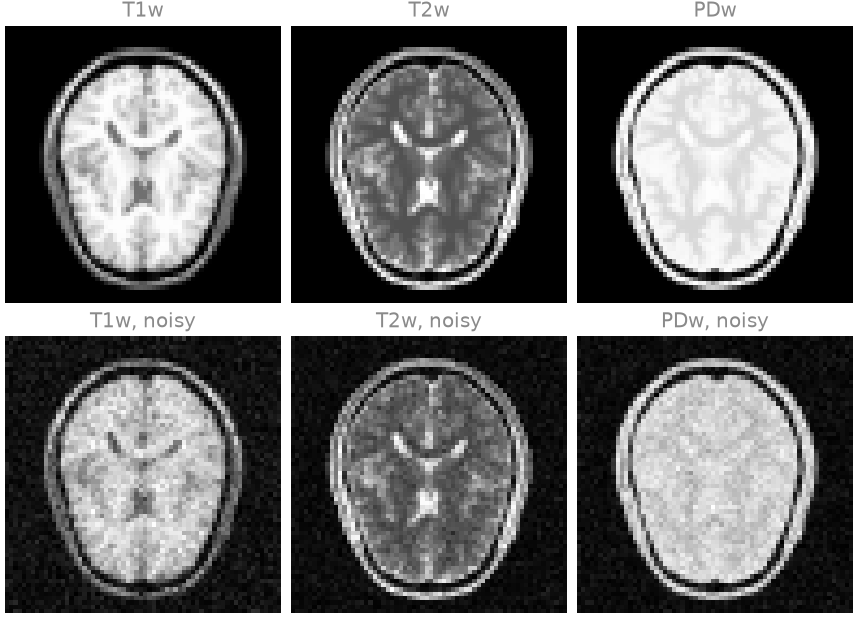
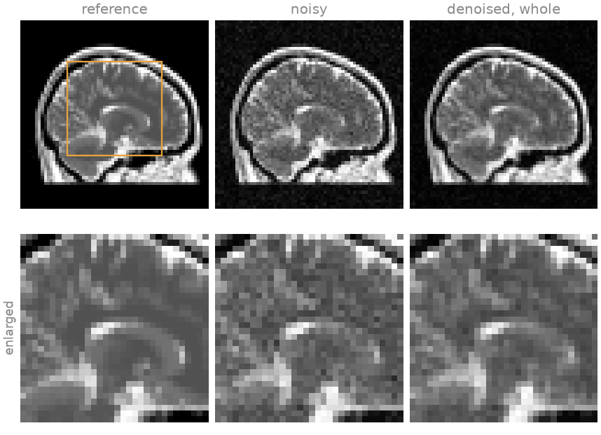
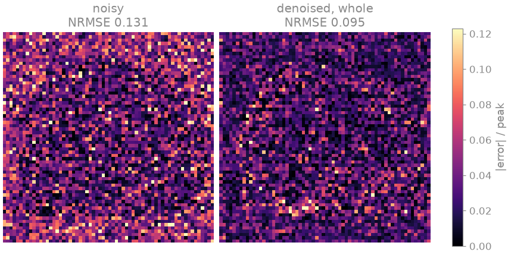
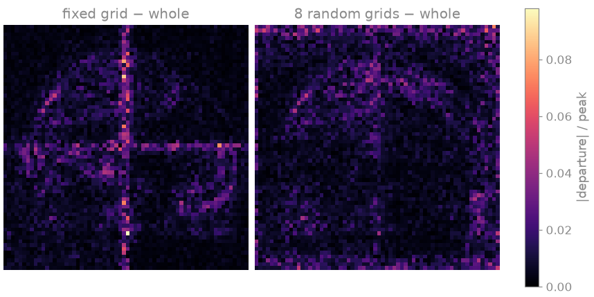
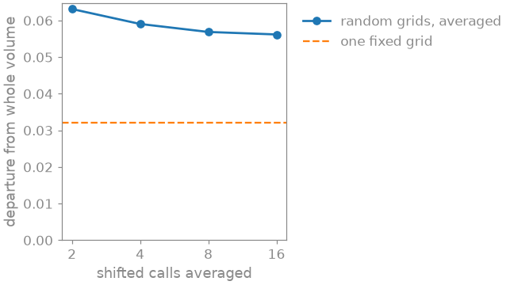

Note
Go to the end to download the full example code.
Networks for complex volumes#
In lessons 10 and 11 your network denoised one complex 2D slice. The data you most need a learned reconstruction for are larger: a 3D volume of several contrasts, the subspace coefficients of MR fingerprinting, the frames of a cine. In this tour you train a 3D denoiser on patches of a complex, multi-contrast brain volume, apply it to the whole volume of another subject patch by patch, the way it would run on a scanner GPU too small for the volume, and check that the patch boundaries leave no seams.
Three things change when you go from a slice to such a volume:
You denoise the contrasts jointly, as channels of one image, so that the network can use the anatomy they share. Their signal levels differ, so you balance them before the network sees them.
The network’s activations for the whole volume do not fit in GPU memory, so you train on patches and apply the network patch by patch.
A network applied on a fixed grid of patches leaves seams at the patch boundaries. Offsetting the grid at random and averaging a few calls spreads them out.
Prerequisites: lesson 11, 11. Training an unrolled network.
Learning objectives
Build a 3D
bartorch.learning.UNetfor complex multi-contrast images withbartorch.learning.ComplexNet, and balance the contrasts by whitening.Train it on patches drawn by
torchio, with augmentations that preserve the complex MR signal.Apply it to a whole volume with
bartorch.learning.Patchwise, and average the seams out withbartorch.learning.moments().Compare the size of spatial and spatiotemporal networks.
Multi-contrast complex volume#
Your data are three spin-echo contrasts of a BrainWeb subject [1]
on a \(64^3\) grid: \(T_1\)-weighted (TR 600 ms, TE 12 ms),
\(T_2\)-weighted (TR 4000 ms, TE 100 ms) and proton-density-weighted
(TR 4000 ms, TE 12 ms), each with its own smooth background phase. They come
as one (3, z, y, x) complex tensor; how they are simulated is hidden.
You train on subject 0 and test on subject 4, whose volume you corrupt with
complex Gaussian noise of 6 per cent of each contrast’s peak, an SNR typical
of a fast high-resolution scan.
import lightning
import torch
import torchio as tio
from bartorch import learning
from torch.utils.data import DataLoader
PATCH = 32
NOISE = 0.06
_ = torch.manual_seed(0)
train_volume = brain_volume(subject=0)
test_volume = brain_volume(subject=4)
noisy = test_volume + NOISE * torch.randn_like(test_volume)
print(f"test volume {tuple(test_volume.shape)}, {test_volume.dtype}")

test volume (3, 64, 64, 64), torch.complex64
An axial slice through the middle of the test volume, clean on top and with the noise you will remove below. The three contrasts share the anatomy and differ in which tissue is bright, which is what a joint denoiser can use.
The network#
UNet is a residual U-Net whose last convolution
starts at zero, so the untrained network returns its input. A U-Net works on
real channels, so you wrap it in ComplexNet,
which lays the three complex contrasts out as six real channels – the real
parts, then the imaginary parts – and lays the output back out as complex
contrasts.
With normalize="whiten", ComplexNet subtracts each channel’s mean
and multiplies by the inverse square root of the channels’ covariance before
the call, and undoes both after it. The network then sees uncorrelated
channels of unit variance, whatever the relative energy of the contrasts.
net = learning.UNet(6, spatial=3, widths=(8, 16, 32))
denoiser = learning.ComplexNet(net, spatial=3, channels=1, normalize="whiten")
weights = sum(p.numel() for p in net.parameters())
print(f"{weights} weights, {4 * weights / 1e6:.2f} MB in single precision")
with torch.no_grad():
identity = torch.allclose(denoiser(noisy[None])[0], noisy, atol=1e-5)
print("untrained network returns its input:", identity)
136942 weights, 0.55 MB in single precision
untrained network returns its input: True
Patches and augmentation#
torchio holds the training volume as a torchio.ScalarImage of
real channels (as_real()) and draws \(32^3\)
patches from it through a torchio.Queue.
Choose augmentations that turn one MR image into another the acquisition
could have produced: a flip, and RandomGain, a
receiver gain and global phase shared by the contrasts. An intensity
transform applied to the real and imaginary channels separately, such as a
gamma correction, would produce a signal no acquisition can. The global
phase varies over a limited range here: a network trained over every phase
has to learn to commute with a rotation of its real and imaginary channels,
which takes more training than this tour runs.
volume = learning.as_real(train_volume).flatten(0, 1)
subject = tio.Subject(image=tio.ScalarImage(tensor=volume))
augment = tio.Compose(
[
tio.RandomFlip(axes=(0, 1, 2)),
learning.RandomGain(phase=0.3, log_scale=0.2),
]
)
queue = tio.Queue(
tio.SubjectsDataset([subject], transform=augment),
max_length=64,
samples_per_volume=32,
sampler=tio.UniformSampler(PATCH),
num_workers=0,
)
Each patch becomes a training pair when you add a new draw of noise to it, so the network sees a different noise realization at every epoch. The test volume serves as the validation pair.
def pairs(patches):
made = []
for patch in patches:
real = patch["image"][tio.DATA].unflatten(0, (2, 3))
clean = learning.as_complex(real)
noisy_patch = clean + NOISE * torch.randn_like(clean)
made.append({"input": noisy_patch, "target": clean})
return made
validation = [{"input": noisy, "target": test_volume}]
trainer = lightning.Trainer(
max_epochs=30,
accelerator="cpu",
logger=False,
enable_checkpointing=False,
enable_model_summary=False,
enable_progress_bar=False,
)
trainer.fit(
learning.Reconstruction(denoiser, "denoiser", lr=2e-3),
DataLoader(queue, batch_size=4, collate_fn=pairs),
DataLoader(validation, batch_size=1, collate_fn=list),
)
/opt/hostedtoolcache/Python/3.12.15/x64/lib/python3.12/site-packages/lightning/pytorch/utilities/_pytree.py:21: `isinstance(treespec, LeafSpec)` is deprecated, use `isinstance(treespec, TreeSpec) and treespec.is_leaf()` instead.
/opt/hostedtoolcache/Python/3.12.15/x64/lib/python3.12/site-packages/lightning/pytorch/trainer/connectors/data_connector.py:434: The 'val_dataloader' does not have many workers which may be a bottleneck. Consider increasing the value of the `num_workers` argument` to `num_workers=3` in the `DataLoader` to improve performance.
/opt/hostedtoolcache/Python/3.12.15/x64/lib/python3.12/site-packages/lightning/pytorch/trainer/connectors/data_connector.py:434: The 'train_dataloader' does not have many workers which may be a bottleneck. Consider increasing the value of the `num_workers` argument` to `num_workers=3` in the `DataLoader` to improve performance.
Patchwise inference#
Patchwise keeps the volume in host memory, sends
it to the network’s device a few patches at a time, runs the network there
in mixed precision, and assembles the result on the host. On a GPU only the
network and one group of batch patches are resident – two groups at
inference, where the copies of one group overlap the computation on the
other. That is how you denoise a volume larger than the GPU memory, such as
a whole-brain fingerprinting series on a scanner’s 16 GB GPU, with a network
trained on patches of it. Here, on the host, the whole volume is small
enough to denoise in one call too, and that is your reference.
A U-Net is not translation invariant at a patch boundary: its receptive
field extends past the patch, where it sees zeros rather than the
neighbouring voxels. On a fixed grid of patches the errors fall along the
same planes every time. With shift=True the grid is offset at random at
every call, and averaging a few calls with
moments() spreads the boundary errors across the
volume.
grid = (PATCH,) * 3
whole_net = learning.ComplexNet(net, spatial=3, channels=1, normalize="whiten")
fixed = learning.ComplexNet(
learning.Patchwise(net, grid, shift=False),
spatial=3,
channels=1,
normalize="whiten",
)
shifted = learning.ComplexNet(
learning.Patchwise(net, grid, shift=True),
spatial=3,
channels=1,
normalize="whiten",
)
with torch.no_grad():
whole = whole_net(noisy[None])[0]
on_grid = fixed(noisy[None])[0]
averaged, spread = learning.moments(
lambda: shifted(noisy[None])[0],
samples=8,
)



noisy relative error 0.1850
whole volume relative error 0.1125, departure from the whole volume 0.0000
fixed grid relative error 0.1156, departure from the whole volume 0.0321
8 random grids relative error 0.1213, departure from the whole volume 0.0537
The network, 0.14 million weights trained on patches of one head, reduces the relative error of the other head’s volume from about 0.19 to about 0.11, and in the sagittal \(T_2\)-weighted slice the corpus callosum and the cortical folding stay sharp. A real training set and a wider network remove more.
The departure of the fixed grid from the whole-volume result lies on the
planes between patches – the seams – and on the same planes at every call.
A shifted grid covers the volume with one more patch along each axis and so
has more boundaries, including ones at the edges of the volume, and in norm
the average of eight shifted calls departs further from the whole-volume
result than the fixed grid does. The average has no planes, however: the
departure is spread over the volume instead of concentrated where it would
read as an anatomical edge. Inside an iteration, which applies the denoiser
once per step, one shifted grid per call is enough, because no plane
receives the boundary error at every step. The variance
moments() returns is a map of how much the result
depends on where the patches fall, one of the spreads of
Uncertainty estimation.
Size of the network#
The weights set the storage footprint and, with the patch size, the memory
of a call. The default widths of UNet,
(32, 64, 128, 256), give a 3D network of a few million weights.
For a series of frames – a cine, a functional run – you pass
frames=True. The network then convolves each frame spatially and the
frames with a separate one-dimensional convolution, and never downsamples
the frame axis; periodic=True pads that axis circularly, which suits a
cardiac cycle. The factorization costs few weights beyond the spatial
network.
candidates = {
"3D, widths (8, 16, 32)": net,
"3D, default widths": learning.UNet(6, spatial=3),
"3D + frames, default widths": learning.UNet(
6,
spatial=3,
frames=True,
periodic=True,
),
}
3D, widths (8, 16, 32) 0.14 M weights, 0.3 MB in half precision
3D, default widths 8.82 M weights, 17.6 MB in half precision
3D + frames, default widths 9.48 M weights, 19.0 MB in half precision
A frame-resolved network takes a (n, channels, frames, z, y, x) input:
frames = torch.randn(1, 6, 10, 16, 16, 16)
cine = learning.UNet(6, spatial=3, widths=(8, 16), frames=True, periodic=True)
print("(n, channels, frames, z, y, x):", tuple(cine(frames).shape))
(n, channels, frames, z, y, x): (1, 6, 10, 16, 16, 16)
Exercise: random patch grids#
Averaging more shifted calls costs one network pass each. How far from the
whole-volume result is the average of 2, 4, 8 and 16 calls?
moments() needs at least two, since it also returns
a variance. No training is involved:
counts = (2, 4, 8, 16)
departures = []
with torch.no_grad():
for count in counts:
mean, _ = learning.moments(
lambda: shifted(noisy[None])[0],
samples=count,
)
departures.append(float((mean - whole).norm() / whole.norm()))

The departure decreases with the number of calls averaged, slowly, and stays above that of the fixed grid at every count tried. What averaging shifted grids buys is the distribution of the boundary error, off fixed planes, not a result closer to the whole-volume one.
As a spec#
What this tour built, stated the way you would ask an agent for it:
Train a 3D denoiser for a complex (3, 64, 64, 64) multi-contrast volume
with bartorch.learning: a UNet(6, spatial=3, widths=(8, 16, 32)) inside
ComplexNet(spatial=3, channels=1, normalize="whiten"). Draw 32^3
patches of the training volume with a torchio Queue (as_real channels,
RandomFlip and learning.RandomGain(phase=0.3, log_scale=0.2)), add
complex Gaussian noise of 0.06 per patch, and fit 30 epochs of
learning.Reconstruction(..., "denoiser", lr=2e-3) with lightning on CPU.
Apply it to another subject with learning.Patchwise on a 32^3 grid, fixed
and with shift=True averaged over 8 calls by learning.moments, and report
each one's departure from the whole-volume result.
References#
Total running time of the script: (4 minutes 13.096 seconds)